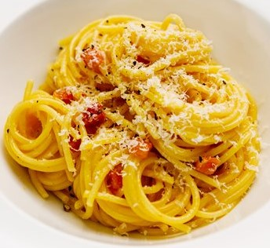

INGREDIENTS
- Salt
- 2 large eggs and 2 large yolks, room temperature
- 1 ounce (about 1/3 packed cup) grated pecorino Romano, plus additional for serving
- 1 ounce (about 1/3 packed cup) grated Parmesan
- Coarsely ground black pepper
- 1 tablespoon olive oil
- 3 ½ ounces of bacon, sliced into pieces about 1/4 inch thick by 1/3 inch square
- 12 ounces spaghetti (about 3/4 box)

INSTRUCTIONS
- Place a large pot of lightly salted water (no more than 1 tablespoon salt) over high heat.
- Bring to a boil.
- Fill a large bowl with hot water for serving, and set aside.
- In a mixing bowl, whisk together the eggs, yolks and pecorino and Parmesan.
- Season with a pinch of salt and generous black pepper.
- Set the water to boil.
- Meanwhile, heat oil in a large skillet over medium heat, add the pork.
- Sauté until the fat just renders, on the edge of crispness but not hard.
- Remove from heat and set aside.
- Add pasta to the water and boil until a bit firmer than al dente.
- Just before pasta is ready, reheat guanciale in skillet, if needed.
- Reserve 1 cup of pasta water, then drain pasta and add to the skillet over low heat.
- Stir for a minute or so.
- Empty serving bowl of hot water.
- Dry it and add hot pasta mixture.
- Stir in cheese mixture, adding some reserved pasta water if needed for creaminess.
- Serve immediately, dressing it with a bit of additional grated pecorino and pepper.